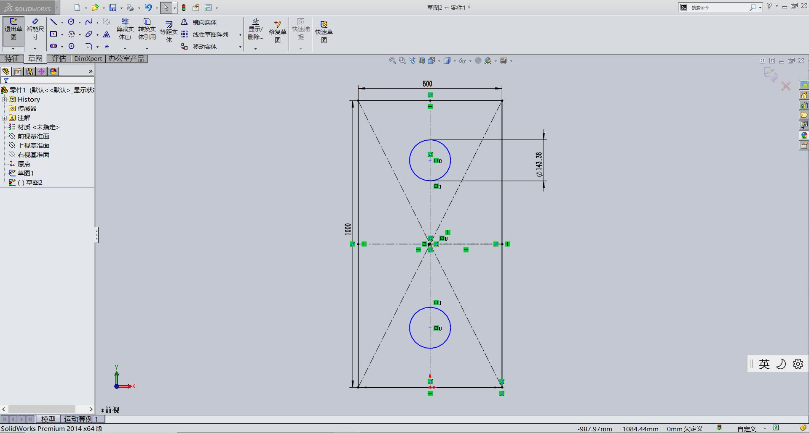
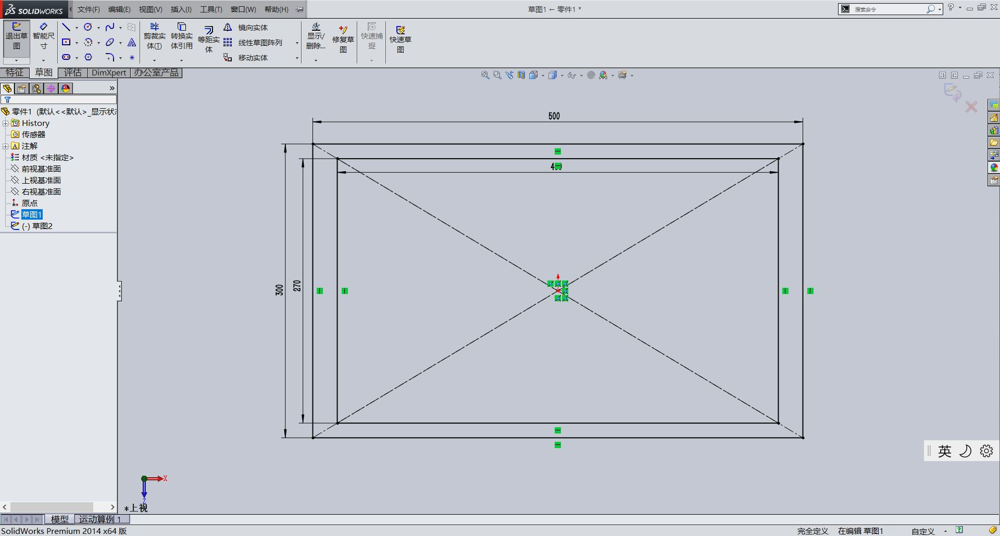
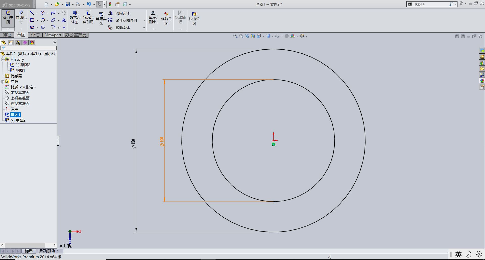
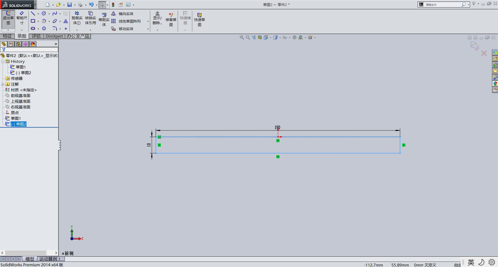
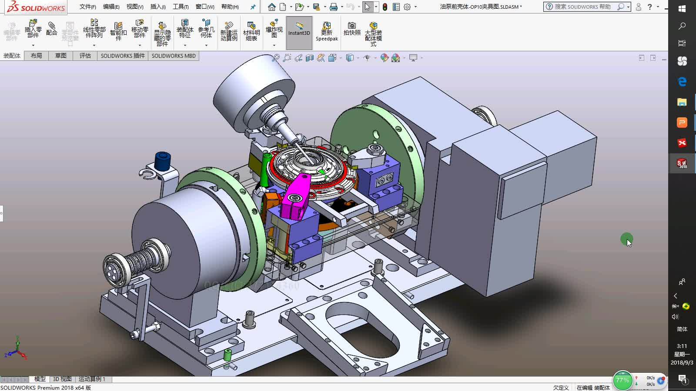
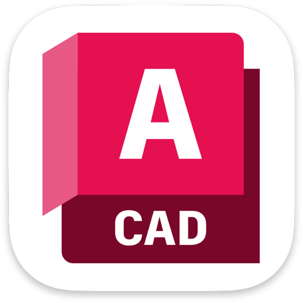
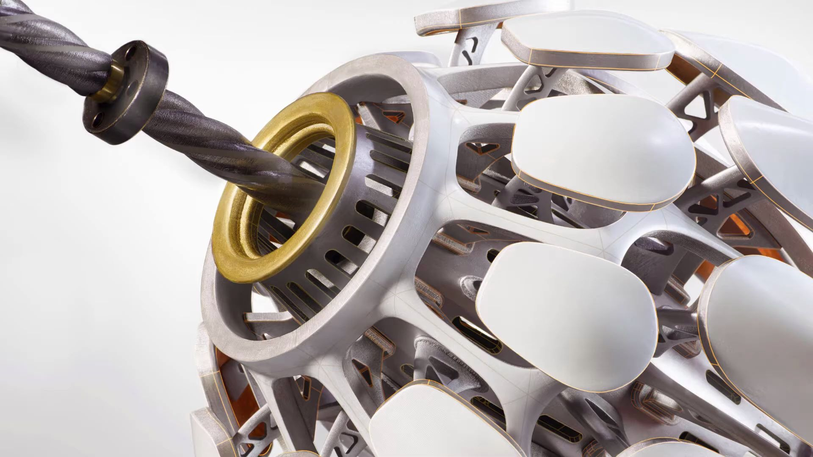
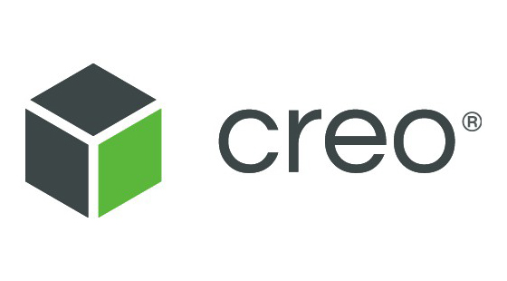
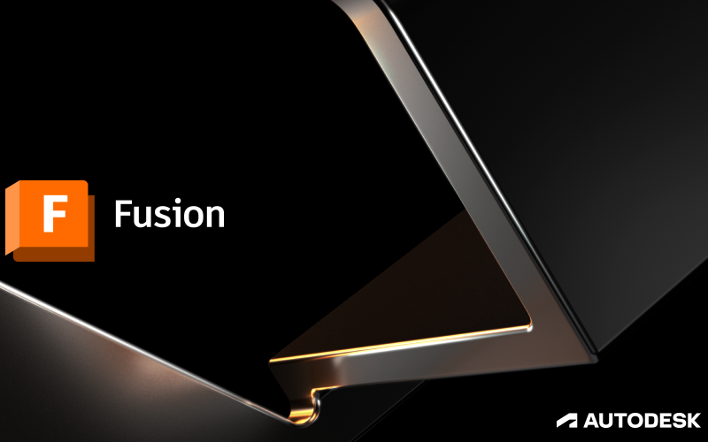
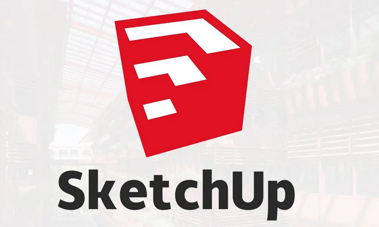

1.
Based on the final design, we need a 3D printed shell and suitable connecting parts to connect it to the faucet.
Firstly, we drew basic sketches of two components

2.
Sketches include front and top views

3.
Due to the software version, we used SW instead of CAD, which is more concise and efficient
4.
This time, the components are bolts, which are used to connect our design with the faucet

5.
And the various data of the bolts have also been discussed and discussed, and we hope to select the best and most suitable bolts

6.
In short, this is what we expect this component to do
Automated Modeling
About Automated Modeling of Solidworks
Using SolidWorks API: API stands for Application Programming Interface.
Through programming, you can automate many features of SolidWorks,
including creating, modifying, and analyzing models. SolidWorks API supports multiple programming languages,
including VBA and VB NET, C #, and C++

About other similar modeling software
AutoCAD: AutoCAD is a design and drawing software developed by Autodesk, widely used in fields such as architecture, machinery, electronics, etc.

Inventor: Inventor is also a product of Autodesk, a software designed specifically for engineering tasks such as 3D mechanical design, simulation testing, and tool creation.

Creo: Creo is a product design software developed by PTC, which provides all tools from 2D drawing to advanced 3D design.

CATIA: CATIA is an engineering and design software developed by French company Dassault Systems, widely used in industries such as automotive and aviation.
Fusion 360: Fusion 360 is a cloud based 3D CAD/CAM software from Autodesk that integrates design, modeling, simulation, and manufacturing functions.

SketchUp: SketchUp is an easy to learn and use 3D modeling software, particularly suitable for architectural and interior design.
 Back